소음진동기사(구) (2011-10-02 기출문제)
1과목: 소음진동개론
1. 20℃인 실험실에서 한 쪽이 열려있는 길이가 1m인 관이 공명하는 기본음의 주파수는?
- 43Hz
- 64Hz
- 86Hz
- 98Hz
(정답률: 알수없음)

2. M.K.S. 단위계를 사용하는 감쇠 자유 진동계의 운동 방정식이
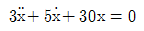
으로 표현될 때 이 진동계의 대수감쇠율은?- 0.3
- 1.7
- 5.0
- 19.0
(정답률: 알수없음)
3. 다음 설명하는 청감보정 특성은?
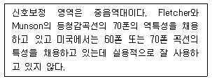
- B특성
- C특성
- D특성
- H특성
(정답률: 알수없음)
4. 10Hz의 진동수를 갖는 조회진동의 변위진폭이 0.01m로 계측되었을 때 수직진동레벨은?
- 118 dB(V)
- 122 dB(V)
- 127 dB(V)
- 136 dB(V)
(정답률: 알수없음)
5. 맥놀이(Beat) 현상은 다음 소음의 물리적 특성 중 주로 무엇 때문에 발생하는가?
- 간섭
- 회절
- 굴절
- 반사
(정답률: 알수없음)
6. 음압의 실효치가 2×10-2N/m2일 때 음의 세기레벨(dB)은? (단, 고유음향 임피던스는 400N · sec/m3)
- 60
- 80
- 120
- 140
(정답률: 알수없음)
7. 중앙치 L50 은 61.7dB(A), 80% 렌지의 상, 하단치인 L10 및 L90 은 각각 72.5와 52.5dB(A)이다. 이 때 소음공해레벨은 대략 몇 dB(A)인가? (단, 순간레벨의 분포는 가우시안분포에 가까움)
- 88
- 81
- 76
- 72
(정답률: 알수없음)
8. 다음 중 기류음으로 가장 거리가 먼 것은?
- 엔진의 배기음
- 압축기의 배기음
- 베어링 마찰음
- 관의 굴곡부 발생음
(정답률: 알수없음)
9. 다음 재료 중 음의 매질에서의 전파속도가 가장 빠른 것은? (단, 매질의 온도는 20℃로서 같다.)
- 공기
- 나무
- 유리
- 강철
(정답률: 알수없음)
10. 백색잡음(white noise)에 관한 설명으로 옳지 않은 것은?
- 단위 주파수 대역에 포함되는 성분의 음세기가 전주파수에 걸쳐 일정하다.
- 모든 주파수 대역에 동일한 음량을 가진다.
- 고음역 쪽으로 갈수록 에너지 밀도가 높다.
- 옥타브당 일정한 에너지를 갖는다.
(정답률: 알수없음)
11. 소음의 평가에 관한 설명으로 옳지 않은 것은?
- 등가 소음도(Leq)는 임의의 측정 시간동안 발생한 변동 소음의 총 에너지를 같은 시간 내의 정상소음의 에너지로 등가하여 얻어진 소음도이다.
- 주야 평균소음레벨(Ldn)은 하루의 매 시간당 등가 소음도를 측정한 후, 야간(22:00-07:00)의 매시간 측정치에 15dB의 벌칙레벨을 합산한 후 파워 평균한 레벨이다.
- 소음통계레벨(LN)은 총 측정시간의 N(%)를 초과하 는 소음레벨로, L10 이란 총 측정시간의 10(%)를 초과하는 소음레벨이다.
- 소음공해레벨(LNP)은 변동 소음의 에너지와 소란스러움을 동시에 평가하는 방법이다.
(정답률: 알수없음)
12. 정상적인 청력을 갖고 있는 사람이 음을 구별할수 있는 파장의 범위로 가장 적합한 것은? (단, 20℃, 1기압 기준)
- 약 0.3cm ~ 10m
- 약 1.7cm ~ 17m
- 약 2.0cm ~ 25m
- 약 3.4cm ~ 34m
(정답률: 알수없음)
13. 다음 음파의 종류 중 “음원으로부터 거리가 멀어질수록 더욱 넓은 면적으로 퍼져나가는 파” 를 의미하는 것은?
- 평면파
- 발산파
- 정재파
- 구면파
(정답률: 알수없음)
14. 소음의 영향에 관한 설명으로 옳지 않은 것은?
- 노인성 난청은 고주파음(6000Hz)에서부터 난청이 시작된다.
- 혈중 아드레날린 및 호흡의 깊이는 감소하고, 호흡 회수가 증가한다.
- 저주파보다 고주파 성분이 많을수록 영향을 많이 받는다.
- 노인보다 젊은 사람이, 남성보다 여성이 예민하다.
(정답률: 알수없음)
15. 두꺼운 콘크리트 벽체로 구성된 옥의 주차장의 바닥 위에 무지향성 점음원이 있으며, 이 점음원으로부터 20m 떨어진 지점의 음압레벨은 100db 이었다. 공기흡음에 의해 일어나는 감쇠치를 5dB/10m 라고 할 때 이 음원의 음향파워는?
- 141dB
- 144dB
- 126w
- 251w
(정답률: 알수없음)
16. 등감각곡선(Equal perceived acceleration contour)에 관한 설명으로 옳지 않은 것은?
- 일반적으로 수직 보정된 레벨을 많이 사용하며 그 단위는 dB(V)이다.
- 수직진동은 4~8Hz 범위에서 가장 민감하다.
- 등감각곡선에 기초하여 정해진 보정회로를 통한 레벨을 진동레벨이라 한다.
- 수직보정곡선의 주파수 대역이 4≤ f≤8Hz일 때 보정치의 물리량은 2×10-5×f-1/2(m/s2)이다.
(정답률: 알수없음)
17. 고체 및 액체 중에서의 음의 전달속도(C)와 영율(E) 및 매질밀도(ρ)와의 관계식으로 옳은 것은? (단, 단위는 모두 적절하다고 가정)
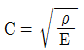
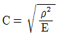
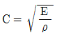
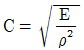
(정답률: 알수없음)
18. 인간의 귀 중 내이(內耳)의 구성요소만으로 나열된 것은?
- 원형창, 청신경, 난원창, 인두
- 난원창, 이관, 이소골, 외이도
- 고막, 이소골, 난원창, 이관
- 인두, 고막, 난원창, 청신경
(정답률: 알수없음)
19. 1/3 옥타브밴드의 하한 주파수를 f1 상한 주파수를 f2라 할 때 이 밴드의 중심 주파수(f0)정의식으로 옳은 것은?
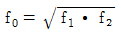
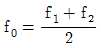
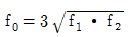
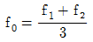
(정답률: 알수없음)
20. 점음원에서 발생되는 소음이 10m 떨어진 지점에 서 음압레벨이 100dB일 때 이 음원에서 25m 떨어진 지점에서의 음압레벨은?
- 88dB
- 92dB
- 96dB
- 104dB
(정답률: 알수없음)
2과목: 소음방지기술
21. 흡음재로 사용되는 다공질 재료의 표면을 다공판으로 피복할 때 다공판의 개공율은 최소한 몇 % 이상 되어야 하는가?
- 2%
- 5%
- 10%
- 20%
(정답률: 알수없음)
22. 사무실을 1000Hz에서 40dB의 투과손실을 갖는 칸막이벽으로 분리하고자 한다. 또한 이 칸막이벽에 동일주파수에서 20dB의 투과손실을 갖는 유리창을 벽면적의 38%크기로 설치하고자 한다면 1000Hz에서의 총 합투과손실은?
- 24dB
- 27dB
- 30dB
- 34dB
(정답률: 알수없음)
23. 공장의 환기 덕트에서 나가는 출구가 민가 쪽으로 향해 있어서 소음이 문제가 되고 있다. 그 대책(환기덕트의 소음대책)으로 옳지 않는 것은?
- 덕트 출구의 방향을 바꾼다.
- 덕트 출구에 사이렌서를 부착한다.
- 덕트 출구 앞에 흡음 덕트를 부착한다.
- 덕트 출구의 면적을 작게 한다.
(정답률: 알수없음)
24. 면밀도 250kg/m2인 콘크리트 판넬을 중간공기층 15cm를 두고 양쪽에 설치하였다. 이 중공이중벽의 저음역 공명주파수는 몇 Hz정도에서 발생하겠는가? (단, 온도 20℃, 공기밀도 1.2kg/m3, 두 콘크리트 판넬의 면밀도는 같다.)
- 6Hz
- 14Hz
- 21Hz
- 24Hz
(정답률: 알수없음)
25. 흡음재료의 선택 및 사용상 유의점으로 옳은 것은?
- 흡음재료를 벽면에 부착 시 전체 내벽에 분산 부착하는 것보다 한 곳에 집중하는 것이 좋다.
- 흡음 tex 등은 못으로 시공하는 것보다 전면을 접착제로 부착하는 것이 좋다.
- 다공질 재료의 경우 표면에 종이를 입혀 사용하도록 한다.
- 다공질 재료의 표면을 도장하면 고음역에서 흡음율이 저하한다.
(정답률: 알수없음)
26. 소음방지대책을 기류음과 고체음 방지대책으로 구분할 때 다음 중 기류음 방지대책에 해당하는 것은?
- 방사면 축소 및 제진처리
- 공명 방지
- 밸브의 다단화
- 가진력 억제
(정답률: 알수없음)
27. 흡음 덕트형 소음기에 관한 설명으로 옳지 않은 것은?
- 각 흐름통로의 길이는 그것의 가장 작은 횡단길이의 2배는 되어야 한다.
- 감음의 특성은 중·고음역에서 좋다.
- 덕트의 최단 횡단길이는 고주파 beam을 방해하지 않는 크기여야 한다.
- 통과유속은 20m/sec 이하로 하는 것이 좋다.
(정답률: 알수없음)
28. 발파소음 측정을 위한 발파풍압 관계식으로 옳은 것은? (단, P:발파풍압(psi), R:거리(ft), W:장약량(lb), K, n:상수)
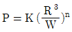
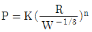
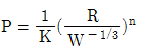
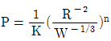
(정답률: 알수없음)
29. 건물벽 음향투과손실을 4dB정도 증가시키고자 할 경우 현재 벽두께는 기존 두께보다 약 몇 배로 증가시켜야 하는가? (단, 음파는 균일한 건물벽(단일벽)에 난입사한다.)
- 1.1
- 1.7
- 2.5
- 3.0
(정답률: 알수없음)
30. 다음은 단일벽의 차음특성 곡선이다. (1), (2), (3)에 알맞은 영역은?
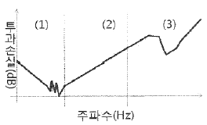
- (1)강성제어영역, (2)질량제어영역, (3)감쇠제어영역
- (1)강성제어영역, (2)질량제어영역, (3)일치효과영역
- (1)질량제어영역, (2)강성제어영역, (3)감쇠제어영역
- (1)질량제어영역, (2)강성제어영역, (3)일치효과영역
(정답률: 알수없음)
31. 부피가 2500m3 이고, 내부 표면적이 1250m2 인 공장의 평균흡음율이 0.25 일 때 음파의 평균 자유행로는?
- 7.1m
- 8.0m
- 8.9m
- 10.6m
(정답률: 알수없음)
32. 막진동 흡음효과를 얻기 위해 면밀도 10kg/m2 인 석고보드를 기존 벽체로부터 5cm 이격한 후 설치하였을 때 막진동에 의해 흡음되는 주파수는? (단, 공기 중의 음속은 340m/s 이다.)
- 85Hz
- 1⑤Hz
- 115Hz
- 125Hz
(정답률: 알수없음)
33. 다음 중 실내 평균흡음율을 구하는 방법으로 거리가 먼 것은?
- 단품 별 흡음율이 주어졌을 때 전체 평균 흡음율 계산
- 잔향시간 측정을 통한 실내 평균 흡음율 계산
- 난입사 흡음율 계산을 통한 측정
- 이미 알고 있는 표준음원을 이용하는 방법
(정답률: 알수없음)
34. 벽면 또는 벽 상단의 음향특성에 따라 일반적으로 분류한 방음벽의 종류에 해당하지 않는 것은?
- 확장형
- 공명형
- 간섭형
- 흡음형
(정답률: 알수없음)
35. 단순 팽창형 소음기의 입구(=출구)에 대한 팽창부의 단면적 비가 6 일 때 최대 투과손실은 약 몇 dB인가?
- 10dB
- 14dB
- 22dB
- 25dB
(정답률: 알수없음)
36. 다음은 흡음재의 1/3옥타브 대역에서 각 중심주파수에서의 흡음율 데이터이다. 이 흡음재의 감음계수는?
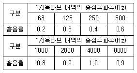
- 0.525
- 0.638
- 0.675
- 0.825
(정답률: 알수없음)
37. 관내법에 의한 시료의 흡음율 측정에서 입사음의 진폭이 2×10-1Pa, 반사음의 진폭이 1×10-1Pa일 때 이 시료의 흡음율은?
- 0.50
- 0.67
- 0.75
- 0.90
(정답률: 알수없음)
38. 다음은 다공질형 흡음재의 시공에 관한 설명이다. ( )안에 알맞은 것은?
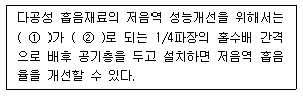
- ① 에너지 밀도, ② 최소
- ① 에너지 밀도, ② 최대
- ① 입자 속도, ② 최대
- ① 입자 속도, ② 최소
(정답률: 알수없음)
39. 높이 4[m]×세로 8[m]×가로 10[m]인 실내의 천장, 벽, 바닥의 흡음율이 각각 0.5, 0.1, 0.2 일 때 실정수는?
- 91.6m2
- 116.6m2
- 125.8m2
- 136.6m2
(정답률: 알수없음)
40. 흡음재를 부착하여 실내소음을 10dB 저감시켰을 경우 평균흡음율은? (단, 감쇠량 ΔL=10log(R2/R1)을 사용하여 계산하고, 흡음 전 실정수는 50m2, 실내의 전 표면적은 600m2)
- 0.2⑤
- 0.250
- 0.388
- 0.455
(정답률: 알수없음)
3과목: 소음진동 공정시험 기준
41. 배출허용기준 중 진동레벨기록기를 사용하여 진동을 측정한 경우 기록지상의 지시치의 변동폭이 5 dB이내일 때 배경진동레벨을 정하는 기준으로 옳은 것은?
- 구간내 최대치
- 구간내 최대치부터 진동레벨 크기순으로 10개의 산술평균치
- 구간내 측정치의 산술평균치
- 구간내 측정치의 기하평균치
(정답률: 알수없음)
42. 소음 측정기기의 구조별 성능에 관한 설명으로 옳지 않은 것은?
- 출력단자(monitor out)는 소음신호를 기록기 등에 전송할 수 있는 교류단자를 갖춘 것이어야 한다.
- 지시계기(meter)는 지침형인 경우 유효지시범위가 1dB 이상이어야 한다.
- 교정장치(calibration network calibrator)는 80dB(A) 이상이 되는 환경에서도 고정이 가능하여야 한다.
- 청감보정회로(weighting networks)는 A특성을 갖춘 것이어야 한다.
(정답률: 알수없음)
43. 소음측정에 사용되는 각 장치에 관한 설명으로 옳지 않은 것은?
- 데이터 녹음기는 소음계 등의 아날로그 또는 디지털 출력신호를 녹음·재생시키는 장비를 말한다.
- 방풍망은 소음을 측정할 때 바람으로 인한 영향을 방지하기 위한 장치로서 소음계의 마이크로폰에 부착하여 사용하는 것을 말한다.
- 동특성 조절기는 마이크로폰을 소음계와 분리시켜 소음을 측정할 때 마이크로폰의 지지장치로 사용하거나 소음계를 고정할 때 사용하는 장치를 말한다.
- 표준음 발생기는 소음계의 측정감도를 교정하는 기기로서 발생음의 주파수와 음압도가 표시되어 있어야 하며, 발생음의 오차는 ±1 dB 이내이어야 한다.
(정답률: 알수없음)
44. 규제기준 중 생활진동을 측정하기 위해 디지털 진동자동분석계를 사용할 경우 측정진동레벨로 하는 기준으로 옳은 것은?
- 샘플주기를 1초 이내에서 결정하고 5분 이상 측정하여 자동 연산·기록한 90% 범위의 상단치인 L10 값
- 샘플주기를 3초 이내에서 결정하고 10분 이상 측정하여 자동 연산·기록한 90% 범위의 상단치인 L50 값
- 샘플주기를 1초 이내에서 결정하고 5분 이상 측정하여 자동 연산·기록한 80% 범위의 상단치인 L10 값
- 샘플주기를 3초 이내에서 결정하고 10분 이상 측정하여 자동 연산·기록한 80% 범위의 상단치인 L50 값
(정답률: 알수없음)
45. 배출허용기준 중 소음측정 시 측정시간 및 측정지 점수 기준으로 옳은 것은?
- 피해가 예상되는 적절한 측정시각에 1지점을 선정· 측정한 값을 측정소음도로 한다.
- 피해가 예상되는 적절한 측정시각에 2지점 이상의 측정지점수를 선정·측정하여 산술평균한 소음도를 측정소음도로 한다.
- 피해가 예상되는 적절한 측정시각에 3지점 이상의 측정지점수를 선정·측정하여 산술평균한 소음도를 측정소음도로 한다.
- 피해가 예상되는 적절한 측정시각에 4지점 이상의 측정지점수를 선정·측정하여 산술평균한 소음도를 측정소음도로 한다.
(정답률: 알수없음)
46. 항공기 소음한도 측정점에 관한 설명으로 옳지 않은 것은?
- 그 지역의 항공기소음을 대표할 수 있는 장소나 항공기 소음으로 인하여 문제를 일으킬 우려가 있는 장소를 택하여야 한다.
- 측정지점 반경 3.5m 이내는 가급적 평활하고, 시멘트 등으로 포장되어 있어야 하며, 수풀, 수림, 관목 등에 의한 흡음의 영향이 없는 장소로 한다.
- 측정점은 지면 또는 바닥면에서 5~10m 높이로 한다.
- 상시측정용의 경우에는 주변환경, 통행, 타인의 촉수 등을 고려하여 지면 또는 바닥면에서 1.2 ~ 5.0m 높이로 할 수 있다.
(정답률: 알수없음)
47. 다음은 소음도 기록기를 사용하여 측정할 경우의 등가소음도 계산방법이다. ( )안에 알맞은 것은?
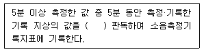
- 5초 간격으로 50회
- 5초 간격으로 60회
- 10초 간격으로 50회
- 10초 간격으로 60회
(정답률: 알수없음)
48. 배출허용기준 중 소음측정 시 배경소음 보정에 관한 설명으로 옳지 않은 것은?
- 측정소음도가 배경소음도보다 3.0 ~ 9.9 dB 차이로 크면 배경소음의 영향이 있기 때문에 측정소음도에 보정치를 보정한 후 대상소음도를 구한다.
- 측정소음도가 배경소음보다 10 dB 이상 크면 배경 소음의 영향이 극히 작기 때문에 배경소음의 보정없이 측정소음도를 대상소음도로 한다.
- 보정치 = -log(1- 10-0.1d)로 한다.
- 측정소음도가 배경소음도보다 3 dB 미만으로 크면 재측정하여 대상소음도를 구하여야 하며, 2회 이상의 재측정에서도 측정소음도가 배경소음도보다 3 dB 미만으로 크면 공장배출소음 측정평가표에 그 상황을 상세히 명기한다.
(정답률: 알수없음)
49. 배출허용기준 중 진동측정을 위한 측정조건으로 옳지 않은 것은?
- 진동픽업의 설치장소는 옥외지표를 원칙으로 한다.
- 진동픽업의 설치장소는 완충물이 없는 장소로 한다.
- 진동픽업의 수직면을 확보할 수 있고, 외부환경 영향에 민감한 곳에 설치한다.
- 진동픽업은 수직방향 진동레벨을 측정할 수 있도록 설치한다.
(정답률: 알수없음)
50. 규제기준 중 생활진동 측정방법으로 옳지 않은 것은?
- 측정점은 피해가 예상되는 자의 부지경계선 중 진동레벨이 높을 것으로 예상되는 지점을 택하여야 하며 배경진동의 측정점은 동일한 장소에서 측정함을 원칙으로 한다.
- 측정진동레벨은 대상 진동발생원의 일상적인 사용상태에서 정상적으로 가동시켜 측정하여야 한다.
- 배경진동레벨은 대상진동원의 가동을 중지한 상태에서 측정하여야 하나, 가동중지가 어렵다고 인정되는 경우에는 배경진동의 측정없이 측정진동레벨을 대상진동레벨로 할 수 있다.
- 피해가 예상되는 적절한 측정시각에 2지점 이상의 측정지점수를 선정·측정하여 산술평균한 진동레벨을 측정 진동레벨로 한다.
(정답률: 알수없음)
51. 소음계를 기본구조와 부속장치로 구분할 때 다음 중 기본구조에 해당되지 않는 것은?
- 동특성 조절기
- 지시계기
- 레벨레인지 변환기
- 표준음 발생기
(정답률: 알수없음)
52. 철도소음 측정자료 평가표 서식에 기재되어야 하는 사항으로 가장 거리가 먼 것은?
- 철도선 구분과 구배
- 최고 열차속도(km/hr)
- 측정소음도(Leq(1h) dB(A)
- 시간당 교통량(대/hr)
(정답률: 알수없음)
53. 7일간의 항공기소음의 일별 WECPNL이 90, 91, 95, 93, 88, 78, 72인 경우 7일간의 평균 WECPNL은?
- 85
- 87
- 91
- 93
(정답률: 알수없음)
54. 동일건물내 사업장 소음을 측정하였다. 1지점에서 의 측정치가 각각 70dB(A). 74dB(A), 2지점에서의 측정치가 각각 75dB(A), 79db(A)로 측정되었을 때, 이 사업장의 측정소음도는?
- 72dB(A)
- 75dB(A)
- 77dB(A)
- 79dB(A)
(정답률: 알수없음)
55. 발파소음평가에서 시간대별 보정발파횟수가 3회 일 경우 보정량은 몇 dB 이며, 지발발파일 경우 보정 발파횟수는 몇 회로 간주하는가?
- 3dB, 1회
- 5dB, 1회
- 7dB, 3회
- 10dB, 3회
(정답률: 알수없음)
56. 환경기준 중 소음측정 시 밤시간대(22:00~06:00)측정소음도의 측정시간 간격 및 측정횟수 기준으로 옳은 것은? (단, 측정점은 낮시간대에 측정한 지점과 동일)
- 2시간 간격으로 2회 이상 측정
- 2시간 간격으로 4회 이상 측정
- 4시간 간격으로 2회 이상 측정
- 4시간 간격으로 4회 이상 측정
(정답률: 알수없음)
57. 생활진동 측정자료 평가표 서식의 “측정환경”란에 기재되어야 하는 내용으로 가장 거리가 먼 것은?
- 지면조건
- 전자장 등의 영향
- 반사 및 굴절진동의 영향
- 습도 및 온도의 영향
(정답률: 알수없음)
58. 측정진동레벨에 배경진동의 영향을 보정한 후 얻어진 진동레벨을 무엇이라 하는가?
- 대상진동레벨
- 평가진동레벨
- 배경진동레벨
- 정상진동레벨
(정답률: 알수없음)
59. 항공기소음한도 측정방법에 관한 설명으로 옳지 않은 것은?
- KS C IEC61672-1에 정한 클래스 2의 소음계 또는 동등이상의 성능을 가진 것이어야 한다.
- 소음계의 청감보정회로는 A특성에 고정하여 측정하여야 한다.
- 소음계와 소음도기록기를 연결하여 측정ㆍ기록하는 것을 원칙으로 하되, 소음도 기록기가 없는 경우에는 소음계만으로 측정할 수 있다.
- 소음계의 동특성을 빠름(fast)모드를 하여 측정하여 야 한다.
(정답률: 알수없음)
60. 다음은 “지발발파” 의 용어정의이다. ( )안에 알맞은 것은?
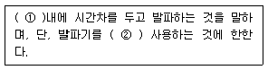
- ① 수초, ② 1회
- ① 수초, ② 3회
- ① 수분, ② 1회
- ① 수분, ② 3회
(정답률: 알수없음)
4과목: 진동방지기술
61. 공해진동의 특성을 대역분석 하기 위해 옥타브대역별 중심주파수가 필요하다. 다음 중 1/1옥타브대역 중심주파수가 아닌 것은?
- 2.0Hz
- 3.15Hz
- 8.0Hz
- 63Hz
(정답률: 알수없음)
62. 그림과 같은 무시할 수 없는 스프링 질량이 있는 스프링-질량 계에서 고유진동수는 얼마인가? (단, k=48000N/m, m=3kg, M=119kg)
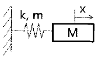
- 2.14 Hz
- 3.18 Hz
- 5.20 Hz
- 9.28 Hz
(정답률: 알수없음)
63. 어떤 기계가 스프링 위에 지지되어 있으며 회전운동에 따른 진동을 발생하고 있다. 3600rpm에서 회전 불균형에 의한 강제외력이 587N이었다면, 이 기계가동에 따른 진동전달력(N)은? (단, 계의 고유진동수는 11.3Hz)
- 약 26.9
- 약 24.3
- 약 21.6
- 약 16.5
(정답률: 알수없음)
64. 진동방지대책 중 발생원 대책으로 거리가 먼 것은?
- 동적흡진
- 가진력 감쇠
- 탄성지지
- 수진점 근방에 방진구 팜
(정답률: 알수없음)
65. 다음 조건으로 기초 위 가대에 기계에 의한 조화파형 상하진동이 작용할 때 정적변위(cm) 값을 구하면?
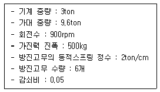
- 3.56 × 10-2
- 4.17 × 10-2
- 5.56 × 10-3
- 6.89 × 10-3
(정답률: 알수없음)
66. 스프링에 0.4kg의 질량을 매달았을 때 스프링이 0.2m만큼 늘어났다. 이 평형점으로부터 0.2m 더 잡아 늘인 다음 놓아주었을 때 스프링 정수는?
- 1.96N/m
- 9.8N/m
- 19.6N/m
- 39.2N/m
(정답률: 알수없음)
67. 다음 방진재료별 고유진동수의 연결로 옳지 않은 것은?
- 방진고무(전단형) : 4Hz 이상
- 공기스프링 : 10 ~ 30Hz
- 코일형 금속스프링 : 2 ~ 6Hz
- 중판형 금속스프링 : 2 ~ 5Hz
(정답률: 알수없음)
68. 임계감쇠계수 Cc를 옳게 표시한 것은? (단, 감쇠비는 1, m: 질량, k: 스프링 상수, wn:고유각진동수)
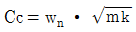
- Cc=2wn∙m
- Cc=wn∙mk
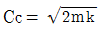
(정답률: 알수없음)
69. 회전원판의 중심에서 15m 떨어진 지점에 35g의 불균형 질량이 있다. 반대편에 100g의 평형추를 붙인다면 어느 지점에 위치하는 것이 가장 적합한가?
- 2.5m
- 5.25m
- 7.5m
- 9.25m
(정답률: 알수없음)
70. 공기스프링에 관한 설명으로 옳은 것은?
- 부하능력이 거의 없다.
- 구조가 복잡하고 시설비가 많다.
- 공기 누출의 위험이 없다.
- 사용진폭이 커서 별도의 댐퍼를 필요로 하지 않는다.
(정답률: 알수없음)
71. 표면파가 지반을 전파할 때, 진동원으로부터 5m 떨어진 지점에서의 진동레벨은 90dB이었다. 10m 떨어진 지점에서의 진동레벨은? (단, 지반 전파의 감쇠정수는 0.0⑤)
- 66dB
- 72dB
- 79dB
- 87dB
(정답률: 알수없음)
72. 다음 중 물리적 거동에 따른 감쇠의 분류에 해당하지 않는 것은?
- 점성감쇠(Viscous Damping)
- 부족감쇠(Under Damping)
- 구조감쇠(Material Damping)
- 건마찰감쇠(Coulomb Damping)
(정답률: 알수없음)
73. 주공기실에 있는 공기스프링 작용을 이용한 것으로 기계하중이 작용할 때 실용적으로 그림과 같은 보조 탱크가 있는 공기스프링의 스프링정수 K를 옳게 표현한 식은? (단, V1: 주공기실의 용적, V2 : 보조탱크의 용적, A : 지지부의 유효면적, P0 : 정적공기실 내압, Pa : 대기압, n : 주공기실의 부풀린단수, D : 공기실의 유효직경이며, 단위는 적절함)
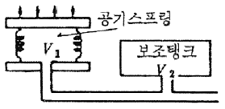
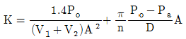
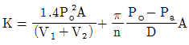
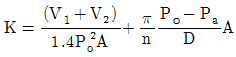
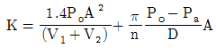
(정답률: 알수없음)
74. 다음 질량-스프링 계의 운동 방정식을 옳게 나타낸 것은? (단, 질량 m은 3kg, 개별 스프링 정수 k=10N/m, 감쇠는 무시한다.)
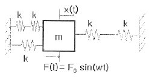
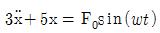
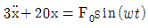
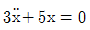
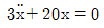
(정답률: 알수없음)
75. 다음 중 가진원이 진동하지 않고 단순히 에너지원으로만 존재하는 경우에도 진동이 발생하는 것으로 바이올린 현의 진동이 이에 해당하는 것은?
- 자려진동
- 계수여진진동
- 계수진동
- 과도진동
(정답률: 알수없음)
76. 진동계의 운동방정식이
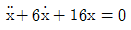
으로 주어질 때 감쇠비는?- 0.16
- 0.35
- 0.75
- 0.96
(정답률: 알수없음)
77. 다음은 자동차의 진동에 관한 설명이다. ( ① ) 안에 공통으로 들어갈 가장 알맞은 것은?
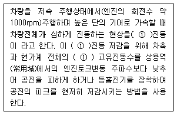
- 시어지(surge)
- 와인드업(wind up)
- 브레이크 져더(brake judder)
- 란체스터(lanchester)
(정답률: 알수없음)
78. 펌프를 기계 기초 위에 완전히 고정시켜 운전하고 있다. 펌프의 기초대 위의 수평레벨 높이가 지면으로부터 898mm에서 902mm 사이를 매분 180회 진동하고 있을 때 다음 중 옳지 않은 것은?
- 진동주파수는 3Hz 이다.
- 속도진폭은 37.7mm/sec 이다.
- 가속도 진폭은 71.1cm/sec 이다.
- 진동가속도 레벨은 97dB 이다.
(정답률: 알수없음)
79. 다음 중 정현진동에서 진동속도의 시간적 변화를 나타내는 진동가속도로 옳은 것은? (단, α: 진동가속도)
- α=-2πf2X0sin(2πft)
- α=-(2πf)2X0cos(2πft)
- α=-(2πf)2X0sin(2πft)
- α=-(2πf)sin(2πft)
(정답률: 알수없음)
80. 수직진동 보정곡선의 주파수 대역별 보정치의 물리량 a로 옳지 않은 것은?
- 0 ≦ f ≦ 1Hz 일 때 a=2×10-5×f2 (m/sec2)
- 1 ≦ f ≦ 4Hz 일 때 a=2×10-5×f-1/2(m/sec2)
- 4 ≦ f ≦ 8Hz 일 때 a=10-5(m/sec2)
- 8 ≦ f ≦ 90Hz 일 때 a=0.125×10-5×f(m/sec2)
(정답률: 알수없음)
5과목: 소음진동 관계 법규
81. 소음진동관리법규상 소음방지시설에 해당하지 않는 것은? (단, 기타사항 등은 제외한다.)
- 소음기
- 방음외피시설
- 방음벽시설
- 차음시설
(정답률: 알수없음)
82. 소음진동관리법규상 소음배출시설기준에 해당하지 않는 것은? (단, 대수기준시설 및 기계·기구기준)
- 자동제병기
- 4대 이상의 시멘트벽돌 및 블록의 제조기계
- 4대 이상의 직기
- 2대 이상의 자동포장기
(정답률: 알수없음)
83. 소음진동관리법규상 시·도지사가 법에 의하여 상시측정한 소음·진동에 관한 자료를 환경부장관에게 제출하여야 하는 기간기준으로 옳은 것은?
- 매년 1월 31일까지
- 매분기 다음 달 말일까지
- 매반기 다음 달 말일까지
- 매년 다음 달 말일까지
(정답률: 알수없음)
84. 소음진동관리법규상 환경기술인 환경부장관이 인정하여 지정하는 기관에서 실시하는 교육을 받아야 하는데, 그 교육의 주기 및 기간기준으로 옳은 것은? (단, 정보통신매체를 이용한 원격 교육은 제외)
- 1년마다 한 차례 이상 3일 이내
- 1년마다 한 차례 이상 5일 이내
- 3년마다 한 차례 이상 3일 이내
- 3년마다 한 차례 이상 5일 이내
(정답률: 알수없음)
85. 소음진동관리법규상 주거지역에 위치한 공장의 주간(07:00~18:00)의 생활소음 규제기준으로 옳은 것은?
- 45dB(A) 이하
- 50dB(A) 이하
- 55dB(A) 이하
- 60dB(A) 이하
(정답률: 알수없음)
86. 소음진동관리법상 환경부장관이 운행차 정기검사를 위한 검사의 방법·대상항목 및 검사기관의 시설·장비 등에 필요한 사항을 환경부령으로 정할 때 누구와 협의하여야 하는가?
- 자동차제조업체장
- 국립환경과학원장
- 국토해양부장관
- 한국자동차협회장
(정답률: 알수없음)
87. 소음진동관리법상 확인검사대행자의 등록을 할 수 있는 자는?
- 금치산자
- 파산선고를 받고 복권되지 아니한 자
- 임원 중 한정치산자에 해당하는 자가 있는 법인
- 확인검사대행자의 등록이 취소된 후 2년이 경과된 자
(정답률: 알수없음)
88. 소음진동관리법령상 인증을 면제할 수 있는 자동차와 가장 거리가 먼 것은?
- 여행자 등이 다시 반출할 것을 조건으로 일시 반입하는 자동차
- 주한 외국공관이 공무용으로 사용하기 위하여 반입하는 자동차로서 외교통상부장관의 확인을 받은 자동차
- 국제협약 등에 의하여 인증을 면제할 수 있는 자동차
- 자동차제작자가 자동차의 개발이나 전시 등을 목적으로 사용하는 자동차
(정답률: 알수없음)
89. 소음진동관리법규상 환경부령으로 정하는 방지시설 설치면제 대상 사업장은 해당 공장의 부지경계선으로부터 직선거리 몇 미터 이내에 공장 등이 없는 경우를 말하는가?
- 50m 이내
- 100m 이내
- 150m 이내
- 200m 이내
(정답률: 알수없음)
90. 소음진동관리법령상 소음도 검사기관으로 지정받기 위한 기준(기술인력수, 시설 및 장비요건)으로 옳지 않은 것은? (단, 기술직과 기능직은 소음진동관리법령상 규정된 자격 요건을 갖춘 자로 한다.)
- 50 ~ 8,000Hz 범위의 모든 음을 1/3옥타브대역으로 분석할 수 있는 주파수분석장비 1대
- 삼각대 6대(높이 10m 이상) 등 마이크로폰을 공중에 고정할 수 있는 장비
- 중심주파수대역이 31.5Hz ~ 16kHz 인 다기능표준음발생기 1대
- 기술직 1명, 기능직 2명
(정답률: 알수없음)
91. 소음진동관리법규상 배출시설의 변경신고를 하여야 하는 규모기준으로 옳은 것은?
- 배출시설의 규모를 100분의 50 이상(신고 또는 변경신고를 하거나 허가를 받은 규모를 증설하는 누계를 말한다) 증설하는 경우
- 배출시설의 규모를 100분의 30 이상(신고 또는 변경신고를 하거나 허가를 받은 규모를 증설하는 누계를 말한다) 증설하는 경우
- 배출시설의 규모를 100분의 25 이상(신고 또는 변경신고를 하거나 허가를 받은 규모를 증설하는 누계를 말한다) 증설하는 경우
- 배출시설의 규모를 100분의 20 이상(신고 또는 변경신고를 하거나 허가를 받은 규모를 증설하는 누계를 말한다) 증설하는 경우
(정답률: 알수없음)
92. 소음진동관리법규상 운행자동차의 경적소음허용 기준으로 옳은 것은? (단, 2006년 1월 1일 이후에 제작되는 자동차로서 경자동차 기준)
- 100 dB(C) 이하
- 1⑤ dB(C) 이하
- 110 dB(C) 이하
- 112 dB(C) 이하
(정답률: 알수없음)
93. 소음진동관리법상 운행차 수시점검에 따르지 아니하거나 지장을 주는 행위를 한 자에 대한 벌칙기준으로 옳은 것은?
- 3년 이하의 징역 또는 1천500만원 이하의 벌금
- 1년 이하의 징역 또는 1천만원 이하의 벌금
- 6개월 이하의 징역 또는 500만원 이하의 벌금
- 300만원 이하의 벌금
(정답률: 알수없음)
94. 소음진동관리법규상 공업지역의 야간(22:00~06:00) 철도진동 한도기준으로 옳은 것은?
- 58 dB(V)
- 60 dB(V)
- 63 dB(V)
- 65 dB(V)
(정답률: 알수없음)
95. 소음진동관리법규상 진동배출시설기준으로 옳지 않은 것은? (단, 동력을 사용하는 시설 및 기계·기구로 한정한다.)
- 30마력 이상의 단조기
- 50마력 이상의 성형기(압출·사출을 포함한다.)
- 50마력 이상의 연탄제조용 윤전기
- 20마력 이상의 분쇄기(파쇄기와 마쇄기를 포함한다.)
(정답률: 알수없음)
96. 소음진동관리법상 소음덮개를 떼어 버린 경우로서 특별시장이 운행자동차 소유자에게 개선명령을 하려는 경우, 얼마 이내의 범위에서 개선에 필요한 기간에 그 자동차의 사용정지를 함께 명할 수 있는가?
- 3일 이내의 범위
- 5일 이내의 범위
- 7일 이내의 범위
- 10일 이내의 범위
(정답률: 알수없음)
97. 소음진동관리법상 사용되는 용어의 뜻으로 옳지 않은 것은?
- 교통기관 : 기차 · 자동차 · 전차 · 도로 및 철도 등을 말한다. 다만, 항공기와 선박은 제외
- 진동 : 기계 · 기구 · 시설, 그 밖의 물체의 사용으로 인하여 발생하는 강한 흔들림
- 방진시설 : 소음 · 진동배출시설이 아닌 물체로부터 발생하는 진동을 없애거나 줄이는 시설로서 환경부령으로 정하는 것
- 소음발생건설기계 : 건설공사에 사용하는 기계 중 소음이 발생하는 기계로서 국토해양부령으로 정하는것
(정답률: 알수없음)
98. 소음진동관리법규상 자동차 사용정지 명령을 받은 자동차 소유자가 부착하여야 하는 사용정지표지에 표시되는 내용으로 가장 거리가 먼 것은?
- 자동차 소유자명
- 사용정지기간 중 주차장소
- 점검당시 누적주행거리
- 자동차등록번호
(정답률: 알수없음)
99. 환경정책기본법령상 관리지역 중 생산관리지역의 밤시간대(22:00~06:00)의 소음환경기준(Leq dB(A))으로 옳은 것은? (단, 도로변 지역)
- 45
- 50
- 55
- 60
(정답률: 알수없음)
100. 다음은 소음진동관리법령상 과태료 부과기준에 관한 설명이다. ( )안에 알맞은 것은?
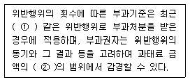
- ① 1년간, ② 10분의 1
- ① 1년간, ② 2분의 1
- ① 2년간, ② 10분의 1
- ① 2년간, ② 2분의 1
(정답률: 알수없음)
f = (n/2L) * v
여기서, n은 공명 모드의 번호, L은 관의 길이, v는 속도입니다. 이 문제에서는 n=1, L=1m, v=음속=340m/s로 주어졌습니다.
따라서, f = (1/2*1) * 340 = 170Hz가 됩니다. 하지만 이는 양쪽 끝이 닫혀있는 경우의 공명 주파수입니다. 문제에서는 한 쪽이 열려있는 경우이므로, 이를 고려해야 합니다.
한 쪽이 열려있는 경우, 공명 주파수는 다음과 같이 계산됩니다.
f = (n/4L) * v
여기서, n은 홀수입니다. 따라서 n=1일 때, f = (1/4*1) * 340 = 85Hz가 됩니다. 따라서 정답은 "86Hz"입니다.